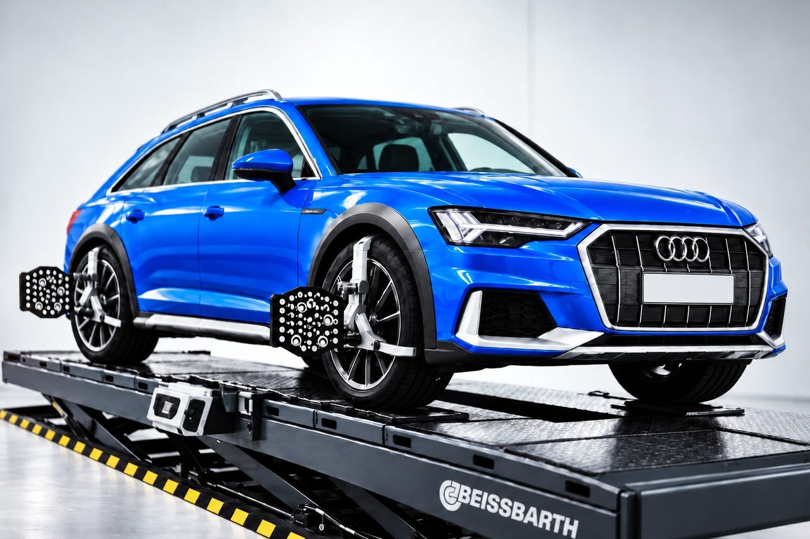

Wheel alignment

J&S servis in Statenice has been specializing in servicing Volkswagen, Audi, Škoda, SEAT and CUPRA vehicles since 1994.
We carry out precise 3D measurement and adjustment of wheel alignment, chassis inspection and diagnostics of brake and damping systems using professional Beissbarth equipment.
- Beissbarth VAS 701 011 3D wheel alignment
- Chassis diagnostics on the test lane
- Specializing in VW Group vehicles since 1994
3D wheel alignment – Beissbarth VAS 701 011

- Four-wheel alignment measurement.
- Toe checks and adjustment within the vehicle's design limits.
- Measurement of camber, caster and other alignment parameters.
- Wheel alignment check after chassis repairs, replacement of suspension parts or vehicle damage.
- Evaluation of the causes of uneven tyre wear, incorrect steering and vehicle instability.
We use the Beissbarth VAS 701 011 wheel alignment measuring system with Q. Lign technology and Q. Grip clamps to help minimize the risk of wheel rim damage.
Chassis diagnostics – Beissbarth test lane
- Measurement of braking forces and their differences on individual wheels.
- Checking the effectiveness of the service and parking brakes.
- Testing the damping effect and suspension condition.
- Checking for play in the wheel suspension and axles.
- Evaluation of the technical condition of the chassis within the range of possibilities of the test line.
Assistance systems and adaptation
After adjusting wheel alignment, we assess the need for basic settings of the relevant systems and possible calibration of radars or cameras according to the manufacturer's requirements. We perform diagnostic functions using the ODIS system according to the specific vehicle.
Driver assistance system calibration is not included in the basic wheel alignment price.
Service price
The price covers standard measurement and adjustment within the vehicle's design limits. Suspension repairs, test lane diagnostics, ODIS diagnostic and adjustment procedures and driver assistance system calibration are charged separately by agreement with the customer.
We work according to the service procedures of the manufacturer and take into account the design and technical condition of the specific vehicle.
Before booking
Discuss an inspection if tyres wear unevenly, directional stability changes or suspension parts have been repaired. A symptom alone does not prove that alignment is the cause; tyre and suspension condition must be considered first.